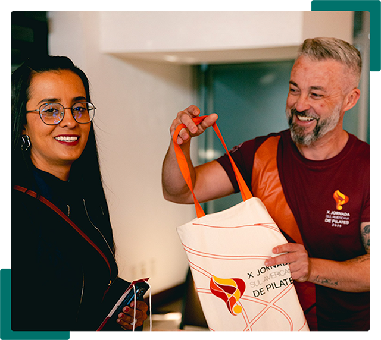

Seja um Staff Voluntário do
Encontro Brasileiro de Pilates
Aprenda, conecte-se e viva os bastidores do maior evento de Pilates do Brasil.
O Programa de Staff Voluntário do Encontro Brasileiro de Pilates é a oportunidade perfeita para quem deseja fazer parte da realização de um grande evento, adquirir experiência, ampliar sua rede de contatos e acompanhar de perto os principais profissionais do mercado.
Ao integrar nossa equipe, você vivenciará os bastidores do evento, colaborará diretamente com a organização e terá uma experiência única de aprendizado, desenvolvimento e conexão com a comunidade do Pilates.

O que é ser um Staff Voluntário?
Ser Staff Voluntário significa fazer parte da equipe responsável por proporcionar uma experiência incrível para centenas de participantes durante o Encontro Brasileiro de Pilates.
Os voluntários atuam apoiando diferentes atividades operacionais, institucionais e de atendimento, contribuindo para que palestras, workshops e demais ações do evento aconteçam de forma organizada e eficiente.
A participação acontece por meio de escalas de horários previamente definidas pela organização, permitindo que os Staffs colaborem ativamente com o evento e também vivenciem momentos de aprendizado ao longo da programação.
Todo o treinamento necessário para atuação é realizado de forma online antes do evento.
Quem pode participar?
O Programa de Staff Voluntário é destinado a pessoas apaixonadas pelo universo do Pilates e que desejam contribuir para a realização do evento.
- Ter idade mínima de 18 anos;
- Ser estudante ou profissional de Fisioterapia;
- Ser estudante ou profissional de Educação Física;
- Ser estudante ou profissional de Enfermagem;
- Ser estudante ou profissional de Marketing;
- Ser estudante ou profissional de Publicidade e Propaganda;
- Ou ser praticante do Método Pilates;
- Ter disponibilidade para cumprir as escalas definidas pela organização;
- Participar do treinamento online obrigatório.
Área de Atuação
Comunicação e Institucional
Os voluntários desta área atuam diretamente no suporte aos participantes e no apoio às atividades institucionais do evento.
Principais atividades:
- Orientação do público
- Captação de conteúdo para as redes sociais
- Apoio ao credenciamento
- Organização dos espaços do evento
- Atendimento aos participantes
- Suporte às atividades institucionais
- Auxílio à equipe organizadora durante a programação
Essa atuação é essencial para garantir uma experiência acolhedora, organizada e eficiente para todos os participantes.
Como funciona o programa?
Entre em contato com nossa equipe para receber mais informações
sobre o processo de seleção e disponibilidade de vagas.
-
Treinamento
OnlineTodos os Staffs selecionados participam de um treinamento online obrigatório, onde recebem informações sobre procedimentos, responsabilidades, atendimento ao público e funcionamento geral do evento.
-
Escalas de
AtuaçãoAs atividades são distribuídas em escalas organizadas pela equipe responsável, considerando a programação de workshops, palestras e demais atividades.
-
Experiência
PráticaDurante o evento, os voluntários trabalham lado a lado com a equipe organizadora, vivenciando os bastidores e contribuindo diretamente para o sucesso do encontro.
BENEFÍCIOS DE SER UM STAFF VOLL
Ao participar do Programa de Staff Voluntário, você terá
acesso a benefícios exclusivos:
- Contato direto com palestrantes e especialistas do mercado;
- Oportunidade de acompanhar workshops e palestras de perto;
- Acesso aos bastidores do evento;
- Crachá oficial de Staff;
- Coffebreak durante o período de atuação;
- Certificação de participação com carga horária;
- Welcome Kit exclusivo;
- Uniforme oficial do evento;
INFORMAÇÕES IMPORTANTES
Antes de se candidatar, é importante estar
ciente das seguintes informações:
- O Programa de Staff é uma atividade voluntária;
- A participação não gera vínculo empregatício com o
Grupo VOLL; - O Grupo VOLL não cobre despesas com passagens,
hospedagem, transporte ou deslocamentos; - Cada participante é responsável pelos custos
relacionados à sua viagem e hospedagem; - O treinamento online é obrigatório para todos os
selecionados; - O cumprimento das escalas estabelecidas é
indispensável para a participação no programa.
POR QUE PARTICIPAR?
Participar como Staff Voluntário é uma oportunidade única para:
-
Conhecer profissionais e referências do mercado
-
Expandir sua
rede de contatos -
Desenvolver habilidades de comunicação e trabalho em equipe
-
Vivenciar os bastidores de um grande evento
-
Aprender com especialistas do Pilates
-
Contribuir para o fortalecimento da comunidade do Pilates no Brasil
PERGUNTAS FREQUENTES
Quem pode participar?
- Ter idade mínima de 18 anos;
- Ser estudante ou profissional de Fisioterapia;
- Ser estudante ou profissional de Educação Física;
- Ser estudante ou profissional de Enfermagem;
- Ser estudante ou profissional de Marketing;
- Ser estudante ou profissional de Publicidade e Propaganda;
- Ou ser praticante do Método Pilates;
- Ter disponibilidade para cumprir as escalas definidas pela organização;
- Participar do treinamento online obrigatório.
Receberei certificado?
Sim, todos os staff voluntários recebem o certificado de participação com carga horária ao fim do evento.
O Grupo VOLL oferece hospedagem?
Não, o Grupo VOLL não cobre despesas com passagens, hospedagem, transporte ou deslocamentos.
O treinamento é presencial?
Não, o treinamento antes do evento é feito de forma online. No dia do evento, antes do mesmo iniciar, temos uma reunião de alinhamento e briefing.
Como participar?
Quer fazer parte da equipe de Staff Voluntário do Encontro Brasileiro de Pilates?
Entre em contato com nossa equipe para receber mais informações sobre o
processo de seleção e disponibilidade de vagas.
VENHA FAZER PARTE DESTA EXPERIÊNCIA
apaixonadas pelo que fazem.
dos maiores eventos de Pilates do Brasil, queremos você ao nosso lado.